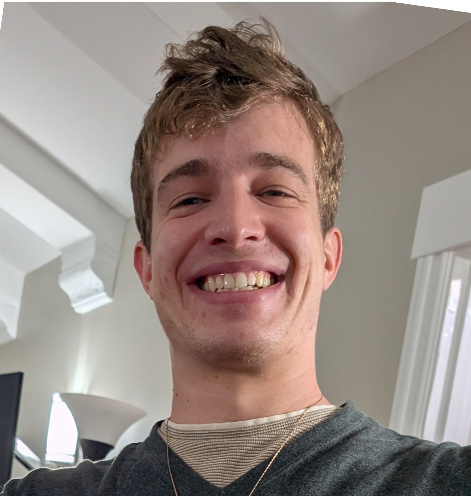

PhD Candidate · UC Berkeley EECS / BAIR
World models, Reinforcement learning, AI+bio/chem. Prev. pure math researcher.
I work on problems I like.
Fifth (final) year PhD at UC Berkeley EECS / BAIR. Focus on longer-horizon and out-of-distribution planning. Multi-disciplinary, searching for the right unifying ideas to engineer intelligence. Throughout my PhD I have searched across various domains (computer vision, scientific simulation, robotics) looking for unifying mathematical ideas that make adapting pretrained models to new domains possible. Generally, I have found that the geometric and variational structure inside learned models, while sharp and brittle, can be smoothed and exploited, and that this is what makes optimizing through them to new targets possible.
I'm advised by Aditi Krishnapriyan and have worked with Yann LeCun, Pieter Abbeel, Yi Ma, and Shankar Sastry. Before Berkeley, I studied pure math at Princeton.
Learning machines should be able to continuously adapt to the world around them, maintaining ongoing control over their own behavior as conditions change. Today's dominant approach is to retrain or fine-tune, but this is expensive, forgets what was learned before, and offers no guarantee of steering the model where you actually need it to go.
Of course, this is just another way of stating the continual learning problem, which has been a long-standing challenge in machine learning and is now getting even more talk and attention. My personal approach has been through the geometric and control-theoretic lens.
I started off as a pure-math geometer in undergrad at Princeton. Solved an open problem in spectral geometry with a few friends (Journal of Spectral Theory, 2022), published a new result in Riemannian optimization (NeurIPS OPT 2020, with Prof. Boumal), and naturally started viewing everything in the world as a manifold: data, models, optimizers, everything. One of my earlier papers in the PhD was creating a new geometric flow (akin to Ricci Flow) specially designed for data manifolds: works from sparse noisy samples, flattens the data manifold, and rolling out the flow iteratively builds the neural network from scratch (JMLR, 2024).
However, the kinds of manifolds encountered in machine learning, while technically low-dimensional and at least almost everywhere smooth, are often incredibly "rough" and "sharp", so many of the classical geometric tools end up not working well. Moreover, this sharpness is not a defect to be removed: adversarial robustness is a property we've learned to live with, since trying to regulate it out makes models less expressive.
The rest of my PhD was moving beyond classical differential geometry. The problems themselves demanded it: each new project required finding the right formulation to optimize through a sharp model's learned structure to reach new targets. Throughout my projects I explore various domains and take the same general approach: treat the pretrained model as a dynamical system you can steer, and find the right mathematical formulation to do so.
Across these projects, I observe that a pretrained model already encodes useful structure about a problem domain (even if it is sharp or rough), and the right variational or control-theoretic formulation lets you optimize through that structure to solve problems the model was never trained for. I believe there is something mathematically fundamental underneath this pattern. Finding it, understanding precisely when and why you can steer a learned model's dynamics toward new objectives, is my central research program. I am especially interested in what this understanding implies for continual learning: if we can formalize how to smoothly direct new information flow through a learned model's structure, then continuous adaptation becomes a matter of ongoing optimization through learned structure, rather than expensive retraining that forgets what came before. Moreover, I hypothesize that this is not only sufficient but necessary for continual learning to succeed.
UC Berkeley — MS/PhD in EECS, 2021–present
(expected 2026)
Princeton University — A.B. in Mathematics,
2017–2021